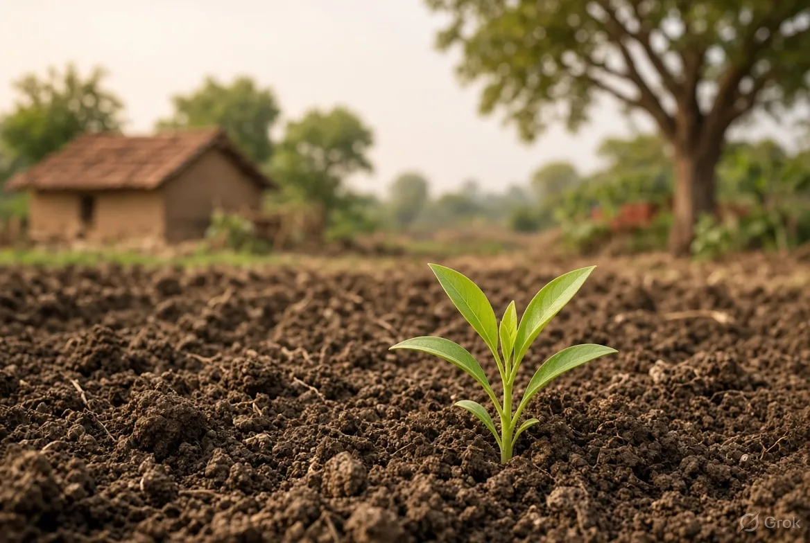
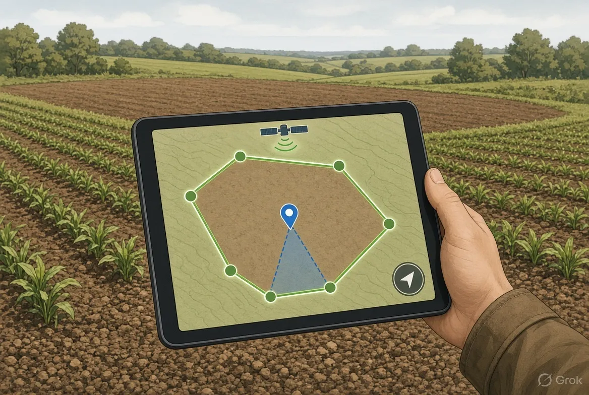
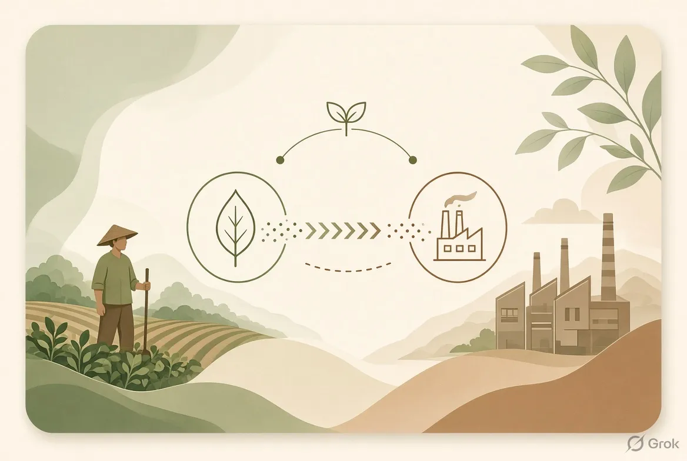
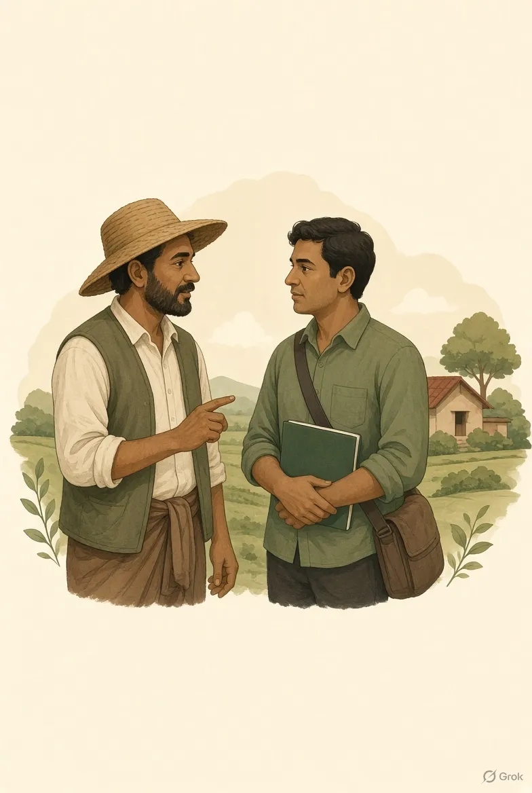

A carbon marketplace where buying and selling credits is frictionless.
Now our farmers grow too. We combine village-level trust, project development, and direct buyer sales for small farms in eastern India.
Small farmers are locked out of carbon markets because projects need scale, records are weak, and verification is slow. We are building the path from farm plot to verified credit to company buyer.

Why small farmers miss out on carbon markets
Carbon markets exist, but the practical barriers keep most smallholders outside them.
Hard to reach
Projects need many farms grouped together. Government rules allow FPOs and developers to do this, but few work at true village scale in eastern India.
Poor farm records
Baselines are hard to prove without field records. Most small farms lack the documentation buyers and verifiers require.
Slow independent checks
Only BEE-accredited agencies can validate and verify. Self-certification is not allowed, so timelines stretch.
Farmer income unknown
A Lok Sabha reply noted that no formal assessment of farmer income potential from carbon has been done. The upside remains theoretical for most.
Gap we see: nobody yet combines village-level trust, project development and direct buyer sales in eastern India. (Our view)
Farm to buyer in five steps
We keep the process simple and local while meeting independent verification standards.
Onboard
Farmers join with consent through trusted local coordinators from their own villages. Relationships first.
Map
GPS plot boundaries, crops and practices are recorded. Clear field data builds the baseline.

Match
Each plot is checked against an approved methodology. Only land that fits proceeds.
Verify
An accredited independent agency validates the project. We do not self-certify.
Sell and share
We sell credits to companies. Farmers and PACS receive a share of proceeds (currently planned at 20–30% depending on structure).
Demo Marketplace

Rice paddy cluster — Jharkhand pilot
Estimated 2.0–2.1 credits per acre · Independent verification planned
Soil carbon / regenerative practices
Grouped smallholder plots · Methodology match required

Partner developer credits
We find buyers or run the full sale process for other developers
On our own projects we keep a majority share after farmer and PACS allocation. For partner developers the commission is lower when we only source the buyer.
MRV Demo — Monitoring, Reporting, Verification
Carbon credits only exist after independent checks. Here is how the MRV path works in our model.
Monitoring
Field coordinators and farmers record practices and plot data. GPS boundaries and crop information create the baseline. Ongoing monitoring continues after practices are applied.
Reporting
Data is organised into the format required by the chosen methodology. Clear records reduce rejection risk during validation.
Verification
Only BEE-accredited agencies can validate and verify. Self-certification is not allowed. We submit the project and support the independent process. Timelines can extend beyond initial estimates.
Demo note: no live MRV dashboard is public yet. The software and research dataset are part of the first milestone. First credit revenue is targeted from around month 18 after enrolment and verification.
Our edge: local trust and access
Cooperative sector network
Founder’s relationship with senior leadership of a Jharkhand cooperative institution opens a path to PACS and farmer groups. Jharkhand has 12,207 cooperative societies (National Cooperative Database, July 2026). Relationship, not yet an agreement.
Village-level hiring
Field coordinators come from the farmers’ own villages, so trust is built in rather than imported.
Rules favour grouping
The government programme route lets FPOs and developers group many small farms. We work within those rules.
Other products
Carbon360s sits alongside two live platforms from the same team.
Stock360s
Stock analytics and trading platform focused on Indian markets, with tools for research, F&O and daily intelligence.
Visit stock360s.comRevenue360s
AI sales and CRM automation with WhatsApp and Hinglish agents for growth-focused businesses.
Visit revenue360s.comFrequently asked questions
What is Carbon360s?
A carbon marketplace under development that aims to make buying and selling verified carbon credits frictionless for small farmers in eastern India and for company buyers. We combine local onboarding, mapping, methodology matching, independent verification, and sales.
When will real credits be available?
First credit revenue is targeted from around month 18 after the pilot enrolment, practice implementation, and independent verification. The site currently shows a demo marketplace only.
How do farmers earn?
Farmers and PACS receive a share of credit sale proceeds (planned 20–30% depending on project structure). Exact terms will be documented once projects are registered and offtake is confirmed.
Do you buy land?
No. We never buy land. Acres are farmland that farmers enrol with consent.
Who verifies the credits?
Only BEE-accredited independent agencies can validate and verify. Self-certification is not allowed.
Is this connected to Stock360s and Revenue360s?
Yes. The same founding team built those platforms. Carbon360s reuses the operational base while focusing on carbon markets and farmer access.
Contact us
Interested in the pilot, a credit offtake conversation, partnership, or more information? Send a message. We will reply to ssaurav9572.
Reach us
Email: ssaurav9572@gmail.com
Carbon360s is currently under development. Responses may take a short time while the team is building the pilot and platform.